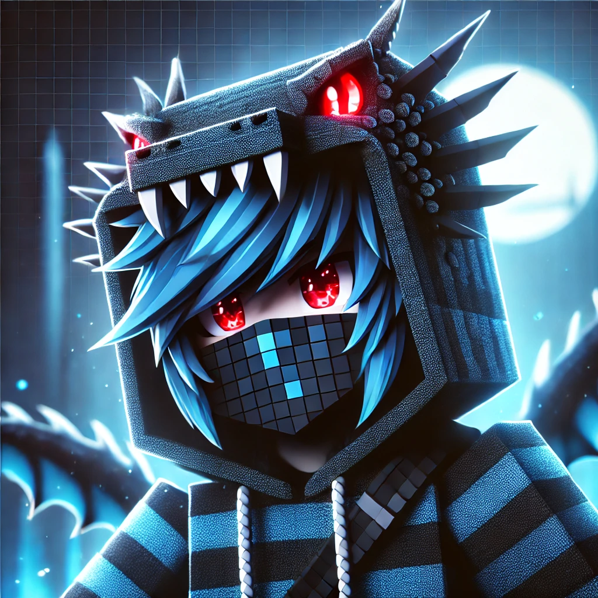

Miriho6643
Biografie
Miriho6643 ist ein leidenschaftlicher Technik- und Spieleenthusiast, der schon früh eine große Neugier für die Funktionsweise digitaler Welten entwickelte. Schon mit zwei Jahren begann er, sich in kreative Sandbox-Spiele wie Scrap Mechanic zu vertiefen, und erweiterte sein Interesse kurze Zeit später auf Trailmakers, das er bis heute aktiv spielt und zu dem er alle DLCs besitzt. Besonders aktiv ist er in Minecraft, das einen Großteil seiner Freizeit einnimmt, und teilt seine Abenteuer regelmäßig beim Streaming mit einer wachsenden Community. Seine Faszination für Spiele führte ihn dazu, die Mechaniken hinter den digitalen Welten zu verstehen. Mit Unterstützung seines Vaters begann er, sich mit HTML und dem Einsatz eines Raspberry Pi auseinanderzusetzen. Schnell entwickelte er eigene Projekte und Skripte und entdeckte später Python als seine bevorzugte Programmiersprache. Heute verbindet Miriho6643 seine Kreativität mit technischem Know-how, experimentiert mit Künstlicher Intelligenz und teilt seine Projekte und Spielabenteuer aktiv online. Sein Werdegang zeigt eine bemerkenswerte Mischung aus spielerischer Exploration, technischem Interesse, autodidaktischem Lernen und Community-Engagement.
Miriho's Daten: Twitch Discord Whatsapp Kanal Whatsapp Community Youtube Main Youtube Shorts GitHub